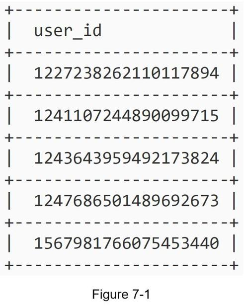

In this chapter, you are asked to design a unique ID generator in distributed systems. Your first thought might be to use a primary key with the auto_increment attribute in a traditional database. However, auto_increment does not work in a distributed environment because a single database server is not large enough and generating unique IDs across multiple databases with minimal delay is challenging.
Here are a few examples of unique IDs:
